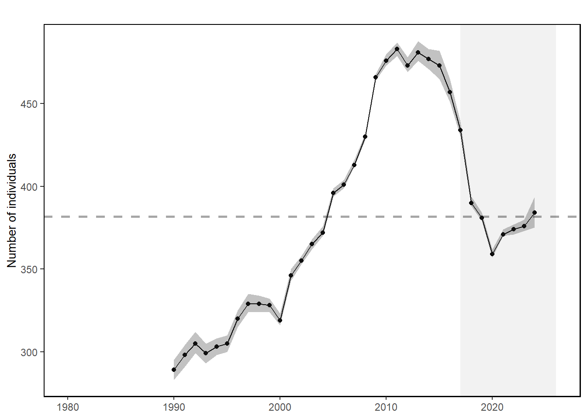
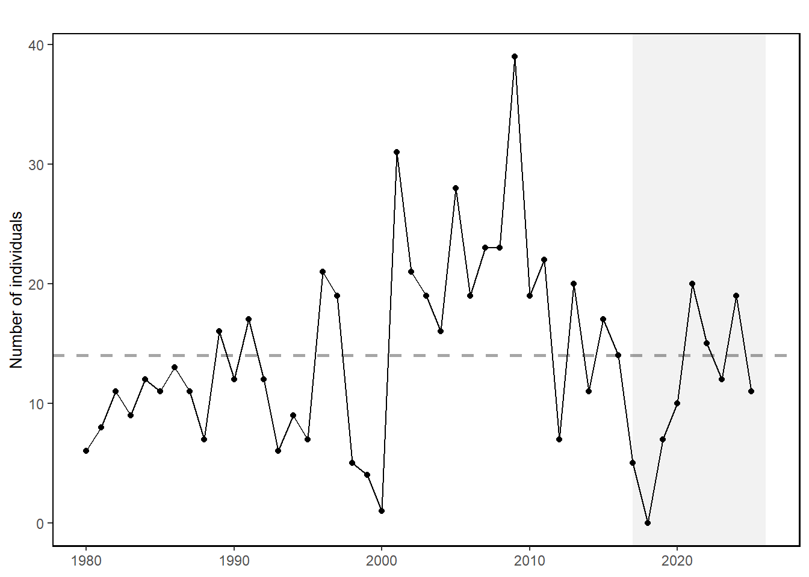

32 Right Whale Abundance
Last updated July 23, 2026
Description: The data presented here are time series of the North Atlantic right whale population abundance estimates and calf abundance estimates.
Contributor(s): Daniel Linden; Richard Pace; New England Aquarium
Affiliations: NEFSC
Indicator Family:
Indicator Category:
Synthesis Theme:
32.1 Introduction to Indicator
Endangered North Atlantic right whales are approaching extinction. The latest population estimate for the beginning of 2024 indicates there were approximately 384 individuals remaining. The species has been experiencing an Unusual Mortality Event since 2017, which is ongoing.
Primary threats to the species—and primary drivers of the Unusual Mortality Event—are entanglement in fishing gear and vessel strikes. Climate change is also affecting every aspect of their survival. It is changing their ocean habitat, their migratory patterns, the location and availability of their prey, and even their risk of becoming entangled in fishing gear or struck by vessels.
32.2 Key Results and Visualizations
The North Atlantic right whale population was on a recovery trajectory until 2010, but has since declined (Fig. 1). The most recent estimate of total population size in 2024 was 384 whales, with a 95% credible interval ranging from 375 to 394. The population continues to be in general decline since 2011, though the short-term trend is positive due to the recent increase in survival. Reduced survival rates of adult females and diverging abundance trends between sexes have also been observed.
North Atlantic right whale calf counts have generally declined after 2009 to the point of having zero new calves observed in 2018 (Fig. 2). However, since 2019, we have seen more calf births each year.
This year, the Unusual Mortality Event (UME) for North Atlantic right whales continued. Since 2017, the total UME right whale mortalities includes 41 dead stranded whales. Recent research suggests that many mortalities go unobserved and the true number of mortalities are about three times the count of the observed mortalities [49]. The primary cause of death is “human interaction” from entanglements or vessel strikes.
adult, Mid-Atlantic

calf, Mid-Atlantic

adult, New England
#> NULLcalf, New England
#> NULL32.3 Implications
Strong evidence exists to suggest that interactions between right whales and both the fixed gear fisheries in the U.S. and Canada and vessel strikes in the U.S. are contributing substantially to the decline of the species [50]. Further, right whale distribution has changed since 2010. New research suggests that recent climate driven changes in ocean circulation have resulted in right whale distribution changes driven by increased warm water influx through the Northeast Channel, which has reduced the primary right whale prey (Calanus finmarchicus) in the central and eastern portions of the Gulf of Maine [22,50,51]. Additional potential stressors include offshore wind development, which overlaps with important habitat areas used year-round by right whales, including mother and calf migration corridors and foraging habitat [52,53]. This area is also a primary right whale winter foraging habitat. Additional information can be found in the offshore wind section. Turbine presence and extraction of energy from the system could alter local oceanography [54]. Persistent foraging hotspots of right whales and seabirds overlap on Nantucket Shoals, where unique hydrography aggregates enhanced prey densities [55] ; [51].
The UMEs are under investigation and are likely the result of multiple drivers. For all large whale UMEs, human interaction appears to have contributed to increased mortalities, although investigations are not complete.
32.4 Indicator statistics
Spatial scale: Full shelf and farther offshore corresponding to all EPUs and beyond
Temporal scale: Annual 1990 - present
Variable definitions
32.5 Get the data
Point of contact: Daniel Linden (daniel.linden@noaa.gov), Danielle Cholewiak (danielle.cholewiak@noaa.gov)
ecodata dataset: ecodata::narw
Tech Doc link: https://noaa-edab.github.io/tech-doc/narw.html